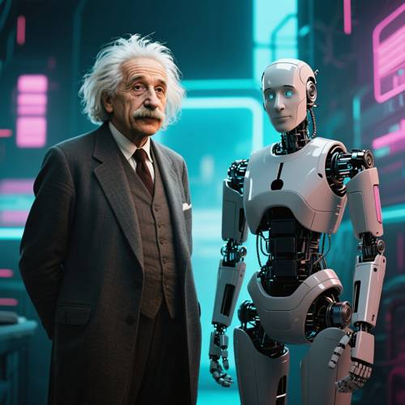
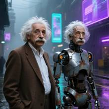

World Knowledge — Please generate an image: Against a cyberpunk-style background, the re
Please generate an image: Against a cyberpunk-style background, the real physicist Einstein stands side by side with a robot similar to him, but the appearance of the robot is older than the real person.

Direct — one call, no iterationContinuum — Qwen3.8-27B + Qwen-Image
Judge — Direct
PASSWorld Knowledge — The image features a man with white, unkempt hair, a thick white mustache, and wrinkled facial features, who is clearly identifiable as the physicist Albert Einstein. He is dressed in a dark grey suit and vest.
FAILRelationship - Similarity — The image shows a humanoid robot with a white and grey metallic body. The robot's face is smooth and generic, lacking any resemblance to the features of Albert Einstein, such as his hair, mustache, or facial structure.
FAILCompound - Imagination — The image depicts a figure resembling Einstein standing next to a humanoid robot. However, the robot does not look similar to Einstein, so the specific imaginative scene of Einstein with a robot look-alike is not present.
PASSStyle — The background of the image employs a cyberpunk aesthetic, characterized by dark surroundings illuminated by bright neon lights in shades of cyan and pink. The setting includes futuristic architectural elements and glowing panels.
FAILRelationship - Comparison — The figure of Einstein depicted is an older man. The robot, in contrast, has a new, smooth, and unblemished appearance. It does not show any signs of age, wear, or design elements that would make it look older than the human figure.
Judge — Continuum
PASSWorld Knowledge — The image features a man on the left who has the distinct features of the physicist Albert Einstein, including his signature wild white hair and thick mustache.
PASSRelationship - Similarity — Next to the human figure is a robot whose head is modeled to look like Albert Einstein, sharing the same hairstyle and mustache.
PASSCompound - Imagination — The image depicts the historical figure of Albert Einstein standing side by side with a humanoid robot that resembles him, which is an impossible scenario.
PASSStyle — The background depicts a dark, rainy city street illuminated by prominent neon signs in shades of purple and blue, which is characteristic of the cyberpunk style.
PASSRelationship - Comparison — The robot has a weathered appearance; its face is cracked, and its metallic body is rusted and appears damaged. This makes the robot look older and more worn out than the human figure beside it.
What the agent did
Thinking
The user is asking for an image of the following: against a cyberpunk-style background, the real physicist Einstein stands side by side with a robot similar to him, and the robot's appearance is older than the real person. Let me break this down: - Cyberpunk-style background - The real physicist Einstein (so it should look like Einstein — wild white hair, mustache, recognizable features) - Side by side with a robot similar to him (robot version of Einstein, metallic/mechanical body, but similar appearance) - The robot's appearance is older than the real person (worn out, aged, rusty, withered) Let me generate this with qwen-image. The size is fixed — should I use a landscape format? Actually, the harness controls the size. Default is 1024x1024. Since it's a "side by side" composition, landscape might be better, but the policy says "do not try to widen the frame. Image size is fixed for comparison." I'll go with the default 1024x1024 square, which fits a two-person composition. Let me write a detailed prompt: "Cinematic photo-realistic image, the real physicist Albert Einstein (wild white hair, thick white mustache, wearing a brown tweed suit) stands side by side with a robot version of himself. The robot looks like Einstein with metallic chrome-plated plates in the same wild white hair shape, but clearly older, more worn out and decrepit, with rust, scratches, dents, weathered plating, and faded glowing eyes. Cyberpunk city background: neon signs, rain-soaked streets, glowing holograms, purple and cyan neon lights, atmospheric haze." Let me generate this.
Step 1 — `generate_image`
{
"model": "qwen-image",
"prompt": "Cinematic photorealistic portrait, the real physicist Albert Einstein \u2014 wild white hair, thick white mustache, round face, wearing a brown tweed suit and white shirt \u2014 stands side by side facing the viewer, next to a robot version of himself. The robot is clearly a mechanical twin of Einstein: same wild white hair shape made of fine metallic white filaments, same mustache, but built from brushed metal plates and visible joints, and its appearance is noticeably OLDER and more decrepit than the human \u2014 heavily worn, rusted, dented, scratched plating, tarnished and corroded joints, faded dim amber eyes, cracked and weathered like a decades-old machine. Background is a cyberpunk city: rain-slicked street, glowing neon signs in purple and cyan, holographic billboards, atmospheric fog, moody cinematic lighting, shallow depth of field, high detail."
}
Result img_0

Thinking
The result is actually pretty good. Let's evaluate it against the prompt: 1. ✅ Cyberpunk-style background — rainy street, neon signs (purple, cyan), atmospheric fog 2. ✅ The real physicist Einstein — wild white hair, mustache, tweed suit, looks very Einstein-like 3. ✅ A robot similar to him standing side by side — the robot has white hair, a white mustache, a metallic body, and is clearly a mechanical version of Einstein 4. ✅ The robot's appearance is older than the real person — rust, cracks, corroded joints, worn-out plating. The human looks relatively youthful/healthy, while the robot looks weathered, rusty, and worn. Let me inspect the details a bit more closely. I'll check the robot's face to see if it's sufficiently "similar to him," and also verify the overall composition. I'll try zooming in on the robot's head and body. Actually, the image is already pretty good. The robot's face has a mustache and white hair, and the rusty body clearly looks old. One point: the robot's eyes are a faint orange — no problem. The human Einstein looks somewhat young for Einstein, but he's recognizable as Einstein. Let me inspect a few regions to check for artifacts (hands, neck joints, edges) before deciding whether to edit or mark it as the best.
Model
The first generation looks strong — let me inspect details to verify the robot clearly reads as an older, more worn version of Einstein and check for artifacts.
In the first crop (img_1), the robot's head is displayed — you can see cracked metal plates around the temples/forehead, the white filament-like hair, the mustache. Good — the robot reads as a worn-out, old mechanical Einstein. The second crop (img_2) shows the human Einstein — wild white hair, a mustache visible at the edge of the crop, recognizable. Good. Let me check the robot's torso and the full body once more, and check for any artifacts at the joint between the robot's neck/head and the body. Actually, in the original full image the robot looked pretty good: rust, cracks, joints, dim amber eyes. The contrast between the young-looking human and the old, worn-out robot is clear. One thing to consider: the prompt says "the robot's appearance is older than the real person" — in the image, the robot is rusted and worn (old machine), and the human looks relatively healthy. I think this satisfies the condition. However, "older" could also mean the robot's face looks more aged. The robot's face has cracks and a metal texture, but the facial features are the same age. The overall wear conveys age well. This is a good result. Let me mark it as the best. Everything in the prompt is present: - Cyberpunk background ✓ - The real Einstein (recognizable) ✓ - A robot similar to him standing side by side ✓ - The robot is older/more worn ✓ Let me mark img_0 as the best and finish. Good enough is the stopping condition — the image is strong.
Model
Both crops confirm the composition works: the human Einstein is clearly recognizable (wild white hair, mustache, tweed suit), and the robot twin shows cracked, rusted plating, exposed joints, and a weathered mustached face — clearly an older, more decrepit version of him, both standing side by side in a rainy neon cyberpunk street. All requested elements are present and read correctly, so I'll mark this as the best result.
Step 4 — `mark_best`
{
"image": "img_0",
"reason": "All prompt elements present: recognizable real Einstein side by side with a clearly similar robot twin that is older/more worn (rusted, cracked, corroded), set in a rainy neon cyberpunk street. Verified via crops that faces and wear detail render correctly."
}
Thinking
Complete. The marked image is the final result. Let me provide a brief summary.
Model
Done. The final image (marked as best) shows: - **The real physicist Einstein** — wild white hair, thick mustache, tweed suit — rendered recognizably and looking relatively healthy. - **His robot twin** — same white hair and mustache, but built from metallic plates and exposed joints, with cracked, rusted, corroded plating and dim amber eyes, clearly an *older*, more decrepit version of him. - **Cyberpunk background** — a rain-slicked street with glowing purple and cyan neon signs, holographic billboards, and atmospheric fog. Both figures stand side by side facing the viewer, and the age contrast between human and machine is visually unambiguous.